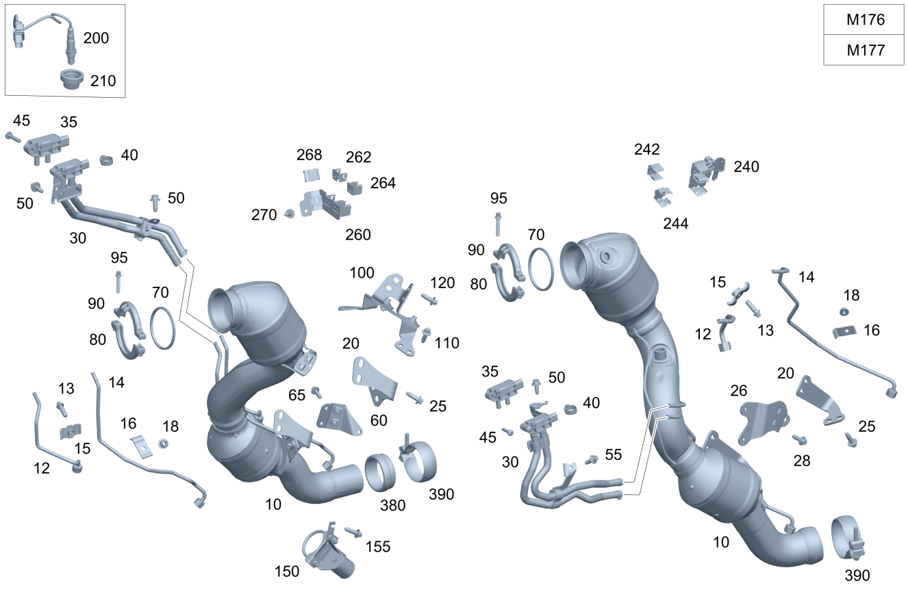

| № | Артикул | Название | Кол. | Примечание | Ограничение |
|---|---|---|---|---|---|
| 10 | A 167 490 07 05 | Трубопровод ОГ пер. (ABGASLEITUNG VORN) | 1 | Front left [697] ДЕТАЛЬ ПОСТАВЛЯЕТСЯ ТОЛЬКО/ИЛИ ТАКЖЕ КАК ЗАП.ЧАСТЬ | M176+(809/800/801/802/FX+803/FV+803+-053) |
| 10 | A 167 490 66 05 | Трубопровод ОГ пер. (ABGASLEITUNG VORN) | 1 | Front left | (M177+-1U2/M176+M019)+M40+4S1+(803+053/804/805/806/807/808) |
| 10 | A 167 490 68 05 | Трубопровод ОГ пер. (ABGASLEITUNG VORN) | 1 | Front left | (M177+-1U2/M176+M019)+M40+3S6+(803+053/804/805/806/807/808) |
| 10 | A 167 490 06 05 | Трубопровод ОГ пер. (ABGASLEITUNG VORN) | 1 | Передн. прав. [697] ДЕТАЛЬ ПОСТАВЛЯЕТСЯ ТОЛЬКО/ИЛИ ТАКЖЕ КАК ЗАП.ЧАСТЬ | M176+(809/800/801/802/FX+803/FV+803+-053) |
| 10 | A 167 490 65 05 | Трубопровод ОГ пер. (ABGASLEITUNG VORN) | 1 | Передн. прав. | (M177+-1U2/M176+M019)+M40+4S1+(803+053/804/805/806/807/808) |
| 10 | A 167 490 67 05 | Трубопровод ОГ пер. (ABGASLEITUNG VORN) | 1 | Передн. прав. | (M177+-1U2/M176+M019)+M40+3S6+(803+053/804/805/806/807/808) |
| 20 | A 167 492 54 00 | - Держатель | 1 | К трубопроводу ОГ справа [414] СТАРУЮ ДЕТАЛЬ УСТАНАВЛИВАТЬ БОЛЬШЕ НЕ РАЗРЕШАЕТСЯ | M176 |
| 20 | A 167 492 59 00 | - Держатель (HALTER) | 1 | К трубопроводу ОГ справа | M176 |
| 20 | A 167 492 35 00 | - Держатель | 1 | К трубопроводу ОГ слева [414] СТАРУЮ ДЕТАЛЬ УСТАНАВЛИВАТЬ БОЛЬШЕ НЕ РАЗРЕШАЕТСЯ | M176 |
| 20 | A 167 492 60 00 | - Держатель (HALTER) | 1 | К трубопроводу ОГ слева | M176 |
| 26 | A 167 490 03 05 | Держатель (HALTER) | 1 | К трубопроводу ОГ слева | M176/M177 |
| 28 | N 000000 000276 | Винт с 6-гр. глвк (SECHSRUNDSCHRAUBE) | 4 | Держатель к трубопроводу ОГ слева и справа; M8X20 | M176/M177 |
| 30 | A 177 140 19 01 | Трубка выпуска ОГ (ABGASLEITUNG) | 1 | Спереди слева | (FC/FV)+(M177+-1U2/M176+M019)+M40+3S6+(803+053/804/805/806/807/808)/FX+(M177+-1U2/M176+M019)+M40+3S6+(804/805/806/807/808) |
| 30 | A 177 140 13 01 | Трубка выпуска ОГ (ABGASLEITUNG) | 1 | Передн. прав. | (FC/FV)+(M177+-1U2/M176+M019)+M40+3S6+(803+053/804/805/806/807/808)/FX+(M177+-1U2/M176+M019)+M40+3S6+(804/805/806/807/808) |
| 35 | A 000 905 93 08 | - Датчик давления (DRUCKSENSOR) | 1 | Передн. лев. | ((FC/FV)+(809/800/801/802/803+-053))+((M177+M40+3S6+-1U2)/M176+M019+M40+3S6)/FX+(809/800/801/802/803)+((M177+M40+3S6+-1U2)/M176+M019+M40+3S6)/(M177/M176+M019)+M40+961+-1U2 |
| 35 | A 000 905 73 13 | - Датчик давления (DRUCKSENSOR) | 1 | Передн. лев. | (M177+-1U2/M176+M019)+M40+3S6+(803+053/804/805/806/807/808) |
| 35 | A 000 905 93 08 | - Датчик давления (DRUCKSENSOR) | 1 | Передн. прав. | ((FC/FV)+(809/800/801/802/803+-053))+((M177+M40+3S6+-1U2)/M176+M019+M40+3S6)/FX+(809/800/801/802/803)+((M177+M40+3S6+-1U2)/M176+M019+M40+3S6)/(M177/M176+M019)+M40+961+-1U2 |
| 35 | A 000 905 73 13 | - Датчик давления (DRUCKSENSOR) | 1 | Передн. прав. | (M177+-1U2/M176+M019)+M40+3S6+(803+053/804/805/806/807/808) |
| 40 | A 003 997 87 90 | - Хомут для шланга (SCHLAUCHSCHELLE) | 4 | К трубопроводу ОГ слева; 13.5 MM | (M177+-1U2/M176+M019)+M40+(3S6/961) |
| 40 | A 003 997 87 90 | - Хомут для шланга (SCHLAUCHSCHELLE) | 4 | К трубопроводу ОГ справа; 13.5 MM | (M177+-1U2/M176+M019)+M40+(3S6/961) |
| 45 | N 000000 002439 | - Винт с 6-гр. глвк (SECHSRUNDSCHRAUBE) | 1 | Датчик (левый) к двигателю; M6X25 | (M177+-1U2/M176+M019)+M40+(3S6/961) |
| 45 | N 000000 002439 | - Винт с 6-гр. глвк (SECHSRUNDSCHRAUBE) | 1 | Датчик (правый) к двигателю; M6X25 | (M177+-1U2/M176+M019)+M40+(3S6/961) |
| 50 | N 910143 006000 | Винт с 6-гр. глвк (SECHSRUNDSCHRAUBE) | 1 | Крепление держателя слева; M6X12 | (M177/M176+M019)+M40+(3S6/961) |
| 50 | N 910143 006000 | Винт с 6-гр. глвк (SECHSRUNDSCHRAUBE) | 2 | Крепление держателя справа; M6X12 | (M177/M176+M019)+M40+(3S6/961) |
| 55 | N 910143 006000 | Винт с 6-гр. глвк (SECHSRUNDSCHRAUBE) | 1 | Крепление выпускной трубы к кронштейну на крышке клапанного механизма; M6X12 | (M177/M176+M019)+M40+(3S6/961) |
| 60 | A 167 490 66 02 | Держатель (HALTER) | 1 | К трубопроводу ОГ справа | M176/M177 |
| 65 | N 000000 000276 | Винт с 6-гр. глвк (SECHSRUNDSCHRAUBE) | 6 | Держатель к трубопроводу ОГ слева и справа; M8X20 | M176/M177 |
| 70 | A 177 142 20 00 | Полуметал. уплотнение (MET.-WEICHSTOFF-DICHTUNG) | 2 | Слева и справа | (M176+M019/M177)+M40+(802+052/803/804/805/806/807) |
| 80 | A 000 995 61 33 | Проф. хомут сист. вып. ОГ (PROFILSCHELLE ABGASANLAGE) | 1 | Выпускная система слева и справа к турбокомпрессору | (M176/M177+-1U2)+M40 |
| 90 | A 000 995 62 33 | Проф. хомут сист. вып. ОГ (PROFILSCHELLE ABGASANLAGE) | 1 | Выпускная система слева и справа к турбокомпрессору | (M176/M177+-1U2)+M40 |
| 95 | A 000 990 55 10 | болт (SCHRAUBE) | 2 | Профильный хомут; M8X40 | (M176/M177+-1U2)+M40 |
| 100 | A 177 490 68 00 | Держатель (HALTER) | 1 | Выпускная система к блоку цилиндров | M176+(809/800/801/802/803+-053) |
| 100 | A 177 490 61 02 | Держатель (HALTER) | 1 | Выпускная система к блоку цилиндров | M176+M40+M019+-(809/800/801/802/803) |
| 110 | N 000000 000276 | Винт с 6-гр. глвк (SECHSRUNDSCHRAUBE) | 4 | Держатель к блоку цилиндров; M8X20 | M176/M177 |
| 120 | N 000000 000276 | Винт с 6-гр. глвк (SECHSRUNDSCHRAUBE) | 4 | Держатель к выпускной системе слева и справа; M8X20 | M176/M177 |
| 200 | A 009 542 60 18 | Лямбда-зонд (LAMBDASONDE) | 1 | Регулирующий зонд справа перед катализатором | M176/M177+-1U2 |
| 200 | A 009 542 55 18 | Лямбда-зонд (LAMBDASONDE) | 1 | Регулирующий зонд слева перед катализатором | M176/M177+-1U2 |
| 200 | A 000 542 14 00 | Лямбда-зонд (LAMBDASONDE) | 1 | Диагностический зонд слева после катализатора | M176/M177+-1U2 |
| 200 | A 000 542 14 00 | Лямбда-зонд (LAMBDASONDE) | 1 | Диагностический зонд справа после катализатора | M176/M177+-1U2 |
| 210 | A 213 491 02 01 | Экран защитный (ABSCHIRMBLECH) | 2 | Регулирующий датчик перед каталитическим нейтрализатором ОГ (левая и правая сторона) | (M176+M019/M177)+M40 |
| 240 | A 176 150 19 00 | Держатель (HALTER) | 1 | Крепление провода кислородного датчика | M176+M40 |
| 242 | A 000 991 43 70 | - Пружинная скоба (FEDERKLAMMER) | 1 | К держателю | M176+M40 |
| 244 | A 000 991 01 70 | - Пружинная скоба (FEDERKLAMMER) | 1 | К держателю; 28X24 MM | M176+M40 |
| 260 | A 177 150 32 00 | Держатель (HALTER) | 1 | Крепление провода кислородного датчика | M176+M40 |
| 262 | A 000 991 43 70 | - Пружинная скоба (FEDERKLAMMER) | 1 | К держателю | M176+M40/M177+M40+-1U2 |
| 264 | A 000 991 01 70 | - Пружинная скоба (FEDERKLAMMER) | 1 | К держателю; 28X24 MM | M176+M40/M177+M40+-1U2 |
| 268 | A 000 541 01 40 | - Держатель (HALTER) | 1 | К держателю; 18 X 24 MM | M176+M40/M177+M40+-1U2 |
| 270 | N 910143 006000 | Винт с 6-гр. глвк (SECHSRUNDSCHRAUBE) | 1 | Крепление держателя справа; M6X12 | (M176/M177+-1U2)+M40 |
| 380 | A 221 492 00 81 | Уплотнительное кольцо (DICHTRING) | 1 | Передняя часть выпускной системы к средней части выпускной системы | (M177+-1U2)/M176 |
| 390 | A 000 490 15 41 | хомут (SCHELLE) | 1 | Система выпуска ОГ (передняя левая секция) к средней секции системы выпуска ОГ; Ø70 MM TUBE | Ø80.4 BOWL | M176/M177 |
| 390 | A 000 490 15 41 | хомут (SCHELLE) | 1 | Система выпуска ОГ (передняя правая секция) к средней секции системы выпуска ОГ; Ø70 MM TUBE | Ø80.4 BOWL | M176/M177 |
| 400 | A 167 490 30 07 | Система выпуска ОГ | 1 | Посередине | M176+4S7+803 |
| 400 | A 167 490 81 04 | Система выпуска ОГ (ABGASANLAGE) | 1 | Посередине | (M176+-598/M177+M40+M036/(M176/M177+M40+M036)+4S6) |
| 430 | A 167 491 84 00 | Держатель (HALTER) | 1 | Крепление шлангов системы выпуска ОГ (левая сторона) | M176/M177+M40+M036 |
| 430 | A 167 491 85 00 | Держатель (HALTER) | 1 | Крепление шлангов системы выпуска ОГ (правая сторона) | M176/M177+M40+M036 |
| 435 | N 000000 003175 | Гайка (MUTTER) | 2 | Держатель к держателю слева и справа; M8 | M176 |
| 440 | N 910105 008008 | Винт с 6-гранной головкой (SECHSKANTSCHRAUBE) | 4 | Консоль к кронштейну (левая и правая сторона); M8X16 | M176/M177+-(1U2/772) |
| 450 | A 167 491 83 00 | Напорный трубопровод (DRUCKLEITUNG) | 1 | Перед сажевым фильтром (правая сторона) | M176+(598/4S7)+-019 |
| 455 | A 167 492 39 00 | Шланг выпускной системы (ABGASSCHLAUCH) | 1 | Перед сажевым фильтром (правая сторона) [402] БОЛЬШЕ НЕ ПОСТАВЛЯЕТСЯ | M176+(598/4S7) |
| 455 | A 167 492 28 00 | Шланг выпускной системы (ABGASSCHLAUCH) | 1 | Перед сажевым фильтром (правая сторона) [402] БОЛЬШЕ НЕ ПОСТАВЛЯЕТСЯ | M176+430+(598/4S7) |
| 460 | A 167 491 25 00 | Напорный трубопровод (DRUCKLEITUNG) | 1 | После сажевого фильтра (правая сторона) | M176+(598/4S7)+-019 |
| 465 | A 167 492 40 00 | Шланг выпускной системы (ABGASSCHLAUCH) | 1 | После сажевого фильтра (правая сторона) [402] БОЛЬШЕ НЕ ПОСТАВЛЯЕТСЯ | M176+(598/4S7) |
| 465 | A 167 492 29 00 | Шланг выпускной системы (ABGASSCHLAUCH) | 1 | После сажевого фильтра (правая сторона) [402] БОЛЬШЕ НЕ ПОСТАВЛЯЕТСЯ | M176+430+(598/4S7) |
| 470 | A 167 491 82 00 | Напорный трубопровод (DRUCKLEITUNG) | 1 | Перед сажевым фильтром (левая сторона) | M176+(598/4S7)+-019 |
| 475 | A 167 492 37 00 | Шланг выпускной системы (ABGASSCHLAUCH) | 1 | Перед сажевым фильтром (левая сторона) [402] БОЛЬШЕ НЕ ПОСТАВЛЯЕТСЯ | M176+(598/4S7) |
| 475 | A 167 492 26 00 | Шланг выпускной системы (ABGASSCHLAUCH) | 1 | Перед сажевым фильтром (левая сторона) [402] БОЛЬШЕ НЕ ПОСТАВЛЯЕТСЯ | M176+430+(598/4S7) |
| 480 | A 167 491 23 00 | Напорный трубопровод (DRUCKLEITUNG) | 1 | После сажевого фильтра (левая сторона) | M176+(598/4S7)+-019 |
| 485 | A 167 492 38 00 | Шланг выпускной системы (ABGASSCHLAUCH) | 1 | После сажевого фильтра (левая сторона) [402] БОЛЬШЕ НЕ ПОСТАВЛЯЕТСЯ | M176+(598/4S7) |
| 485 | A 167 492 27 00 | Шланг выпускной системы (ABGASSCHLAUCH) | 1 | После сажевого фильтра (левая сторона) [402] БОЛЬШЕ НЕ ПОСТАВЛЯЕТСЯ | M176+430+(598/4S7) |
| 490 | A 167 491 30 00 | Держатель (HALTER) | 1 | Крепление напорных трубопроводов (левая сторона) | M176+(598/4S7)+-019 |
| 490 | A 167 491 31 00 | Держатель (HALTER) | 1 | Крепление напорных трубопроводов (правая сторона) | M176+(598/4S7)+-019 |
| 495 | A 211 491 00 23 | Язычок (LASCHE) | 2 | Напорные трубопроводы к кронштейну (лев. и прав.) | M176+(598/4S7)+-019 |
| 498 | A 094 990 25 10 | Винт с 6-гранной головкой (SECHSKANTSCHRAUBE) | 4 | M5X16 | M176+(598/4S7)+-019 |
| 500 | A 167 491 33 00 | Держатель (HALTER) | 1 | Дифференциальный датчик давления [402] БОЛЬШЕ НЕ ПОСТАВЛЯЕТСЯ | M176+(598/4S7) |
| 505 | A 000 990 43 37 | Шестигранная гайка (SECHSKANTMUTTER) | 4 | Держатель к держателю; M6 | M176+(598/4S7) |
| 505 | N 000000 008290 | Шестигранная гайка (SECHSKANTMUTTER) | 4 | Держатель к держателю; M6 | M176+(598/4S7) |
| 510 | N 000000 001139 | Винт с 6-гр. глвк (SECHSRUNDSCHRAUBE) | 2 | Крепление держателя; M8X20 | M176+(598/4S7)+-019/M274+999 |
| 510 | N 000000 001139 | Винт с 6-гр. глвк (SECHSRUNDSCHRAUBE) | 2 | Крепление держателя; M8X20 | M176+4S7+-019 |
| 515 | A 003 997 87 90 | Хомут для шланга (SCHLAUCHSCHELLE) | 8 | Крепление шлангов выпускной системы; 13.5 MM | M176+(598/4S7) |
| 520 | A 246 492 06 41 | Держатель (HALTER) | 2 | Крепление шлангов выпускной системы | M176+(598/4S7) |
| 530 | A 000 905 91 08 | Дифф. датчик давления (DIFFERENZDRUCKSENSOR) | 2 | M176+(598/4S7) | |
| 550 | A 231 492 00 44 | Подвес трубопровода ОГ (AUFHAENGUNG ABGASLEITUNG) | 2 | Подвеска конечного глушителя (левая и правая сторона) | (M176/M177) |
| 560 | A 167 491 15 00 | Держатель (HALTER) | 2 | Конечный глушитель (центр., правая и левая сторона) | (M176/M177) |
| 580 | A 000 995 23 04 | Трубн. хомут сист.вып. ОГ (ROHRSCHELLE ABGASANLAGE) | 2 | Трубопровод ОГ посередине к трубопроводу ОГ сзади слева и справа | (M176/M177) |
| 600 | A 167 490 79 06 | Система выпуска ОГ (ABGASANLAGE) | 1 | Сзади | M176/M177+M40+M036+(809/800/801/802) |
| 605 | A 222 906 75 03 | - Исполнительный элемент (AKTUATOR) | 1 | Сзади слева | M176 |
| 605 | A 222 906 74 03 | - Исполнительный элемент (AKTUATOR) | 1 | Сзади справа | M176 |
| 608 | N 913023 005002 | - Гайка (MUTTER) | 3 | Крепление исполнительного элемента сзади слева; M5 | (M176/M177/M256+M016+U78) |
| 608 | N 913023 005002 | - Гайка (MUTTER) | 3 | Крепление исполнительного элемента сзади справа; M5 | (M176/M177/M256+M016) |
| 610 | A 167 491 17 00 | Держатель (HALTER) | 2 | Выпускная труба (задняя левая и правая) к кузову | (M176/M177/M256+M016) |
| 620 | A 167 492 16 00 | Упл. кольцо вып. системы (DICHTRING ABGASANLAGE) | 2 | Между держателем и кронштейном | M254/M256/M264/M274/M176/M177 |
| 630 | N 000000 007063 | Винт с 6-гранной головкой (SECHSKANTSCHRAUBE) | 6 | К продольному несущему элементу сзади слева и справа; M8X30 | M254/M264/M274/M256/M176/M177+M036 |
| 650 | A 003 998 63 50 | Пробка (VERSCHLUSSSTOPFEN) | 1 | К продольному несущему элементу сзади справа | M176 |
Позиций: 93 · подписано на схемах: 93 · колесо — плавный зум в курсор, перетаскивание — пан, двойной клик — зум, клик по артикулу — скопировать.